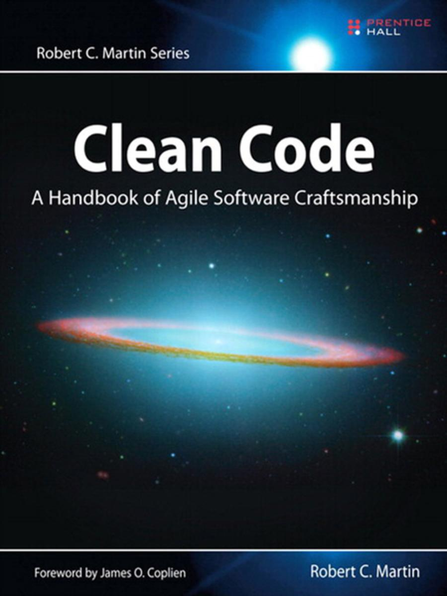

# Codestyle? Warum, läuft doch!
Empfohlene Literatur

von Robert C. Martin (Uncle Bob)
# Vielen Dank fürs Zuhören
Folien findet ihr unter
https://pickware.github.io/codestyle-workshop
Jobs findet ihr hier
https://www.pickware.de/jobs